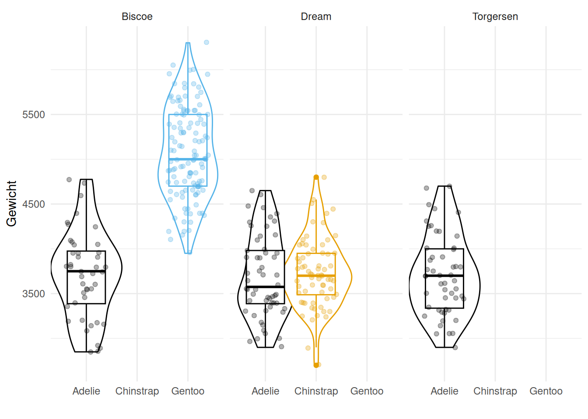

# df |>
# group_by(var1, var2) |>
# summarise(n = n())Prak 3b: Gruppen Transformieren mit dplyr
Tastaturkürzel
| Einen neuen Code-chunk hinzufügen | Ctrl + Alt + I |
| Code “Zeile für Zeile” innerhalb eines Code-chunks ausführen | Ctrl + Enter |
| Den gesamten Code-chunk ausführen | Ctrl + Shift + Enter |
| (Aus-)kommentieren | Ctrl + Shift + C |
Das Pipe |> |
Ctrl + Shift + M |
Der Zuweisungs-Operator <- |
Alt + - |
group_by(), summarise(), n() und count()
Die Funktion group_by() wird genutzt um einen existierenden Dataframe in einen gruppierten Dataframe zu konvertieren, sodass die folgenden Operationen auf der Ebene der Gruppen angewandt werden.
Mit der Funktion summarise() wird ein neuer Dataframe erstellt. Dieser enthält eine Spalte für jede angegebene zusammenfassende Operation und eine Zeile für jede Kombination der Gruppierungsvariablen.
Die Funktion n() gibt die Anzahl der Beobachtungen in einer aktuellen Gruppe zurück. Sie kann nur innerhalb von summarise() (und mutate() und filter()) verwendet werden.
group_by() + summarise() + n() count(), sodass die zwei folgenden code chunks equivalent sind:
# df |> count(var1, var2)Aufgaben
- Lade
tidyverse,skimrundpalmerpenguinsPackages.
library(skimr)
library(palmerpenguins)
library(tidyverse)Verwende
group_by()undsummarise()um herauszufinden, wie viele Pinguine es pro Art gibt.penguins |> group_by(species) |> summarise(n = n())# A tibble: 3 × 2 species n <fct> <int> 1 Adelie 152 2 Chinstrap 68 3 Gentoo 124Was ist das Minimum und Maximum
bill_length_mmprospecies?penguins |> group_by(species) |> summarise(min_year = min(bill_length_mm, na.rm = TRUE), max_year = max(bill_length_mm, na.rm = TRUE))# A tibble: 3 × 3 species min_year max_year <fct> <dbl> <dbl> 1 Adelie 32.1 46 2 Chinstrap 40.9 58 3 Gentoo 40.9 59.6Was ist die Proportion von Pinguine pro
species? Hint:sum(var)summiert alle Werte in der Variablevar.penguins |> group_by(species) |> summarise(n = n()) |> mutate(prop = n / sum(n))# A tibble: 3 × 3 species n prop <fct> <int> <dbl> 1 Adelie 152 0.442 2 Chinstrap 68 0.198 3 Gentoo 124 0.360penguins |> count(species) |> mutate(prop = n / sum(n))# A tibble: 3 × 3 species n prop <fct> <int> <dbl> 1 Adelie 152 0.442 2 Chinstrap 68 0.198 3 Gentoo 124 0.360Nimm “Adelie” raus. Wie viele Pinguine gibt es pro
species? Prozente?penguins |> filter(species != "Adelie") |> group_by(species) |> summarise(n = n()) |> mutate(prop = n / sum(n))# A tibble: 2 × 3 species n prop <fct> <int> <dbl> 1 Chinstrap 68 0.354 2 Gentoo 124 0.646penguins |> filter(species != "Adelie") |> count(species) |> mutate(prop = n / sum(n))# A tibble: 2 × 3 species n prop <fct> <int> <dbl> 1 Chinstrap 68 0.354 2 Gentoo 124 0.646Benutze
group_by()undsummarise()um zu rechnen, wie viele Pinguine es prospecies/island-Kombination gibt (auch Prozente).penguins |> group_by(species, island) |> summarise(n = n()) |> mutate(prop = n / sum(n))# A tibble: 5 × 4 # Groups: species [3] species island n prop <fct> <fct> <int> <dbl> 1 Adelie Biscoe 44 0.289 2 Adelie Dream 56 0.368 3 Adelie Torgersen 52 0.342 4 Chinstrap Dream 68 1 5 Gentoo Biscoe 124 1Etwas stimmt mit den Proportionen nicht! Wie können wir das gewünschte Ergebnis erhalten? Hint: Schaue dir genau die Warnung und den resultierenden Dataframe.
penguins |> group_by(species, island) |> summarise(n = n()) |> ungroup() |> mutate(prop = n / sum(n))# A tibble: 5 × 4 species island n prop <fct> <fct> <int> <dbl> 1 Adelie Biscoe 44 0.128 2 Adelie Dream 56 0.163 3 Adelie Torgersen 52 0.151 4 Chinstrap Dream 68 0.198 5 Gentoo Biscoe 124 0.360Benutze
count()um zu rechnen, wie viele Pinguine es prospecies/island-Kombination gibt (auch Prozente).penguins |> count(species, island) |> mutate(prop = n / sum(n))# A tibble: 5 × 4 species island n prop <fct> <fct> <int> <dbl> 1 Adelie Biscoe 44 0.128 2 Adelie Dream 56 0.163 3 Adelie Torgersen 52 0.151 4 Chinstrap Dream 68 0.198 5 Gentoo Biscoe 124 0.360Was bewirkt das Argument
sortbeicount()?penguins |> count(species, sort = TRUE)# A tibble: 3 × 2 species n <fct> <int> 1 Adelie 152 2 Gentoo 124 3 Chinstrap 68Erstelle Violin- und Boxplots, die die Quantiles und Median des Gewichts pro Insel und Art zeigen (
body_mass_gauf der y-Achse,speciesauf der x-Achse, Facetierung mitisland). Benutze das color schemeggthemes::scale_color_colorblind().library(ggthemes) penguins |> ggplot(aes( x = species, y = body_mass_g, colour = species )) + geom_violin(width = 1.4) + geom_boxplot() + geom_jitter(alpha = 0.3) + facet_wrap(~ island) + labs( x = "", y = "Gewicht" ) + theme_minimal() + theme(legend.position="none") + scale_colour_colorblind() # Colour-blind friendly